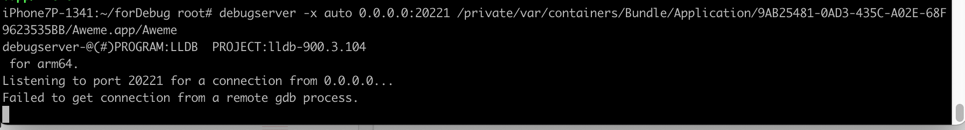

常见问题
Failed to get connection from a remote gdb process
- 现象
用debugserver去调试抖音：
debugserver -x auto 0.0.0.0:20221 /private/var/containers/Bundle/Application/9AB25481-0AD3-435C-A02E-68F9623535BB/Aweme.app/Aweme
报错：
iPhone7P-1341:~/forDebug root# debugserver -x auto 0.0.0.0:20221 /private/var/containers/Bundle/Application/9AB25481-0AD3-435C-A02E-68F9623535BB/Aweme.app/Aweme
debugserver-@(#)PROGRAM:LLDB PROJECT:lldb-900.3.104
for arm64.
Listening to port 20221 for a connection from 0.0.0.0...
Failed to get connection from a remote gdb process.
Exiting.

- 原因
（iPhone7P中的）debugserver，多了额外的权限：
com.apple.security.network.servercom.apple.security.network.clientseatbelt-profiles
导致，不允许连接进程（去调试）
- 解决办法：去掉权限
- 具体步骤： 用去掉了上述权限：
<key>seatbelt-profiles</key>
<array>
<string>debugserver</string>
</array>
...
<key>com.apple.security.network.server</key>
<true/>
<key>com.apple.security.network.client</key>
<true/>
的entitlements文件：
debugserver_noSecurity.entitlements<?xml version="1.0" encoding="UTF-8"?> <!DOCTYPE plist PUBLIC "-//Apple//DTD PLIST 1.0//EN" "http://www.apple.com/DTDs/PropertyList-1.0.dtd"> <plist version="1.0"> <dict> <key>com.apple.springboard.debugapplications</key> <true/> <key>com.apple.backboardd.launchapplications</key> <true/> <key>com.apple.backboardd.debugapplications</key> <true/> <key>com.apple.frontboard.launchapplications</key> <true/> <key>com.apple.frontboard.debugapplications</key> <true/> <key>com.apple.private.logging.diagnostic</key> <true/> <key>com.apple.private.memorystatus</key> <true/> <key>com.apple.private.cs.debugger</key> <true/> <key>get-task-allow</key> <true/> <key>task_for_pid-allow</key> <true/> <key>run-unsigned-code</key> <true/> </dict> </plist>
加到debugserver中 == 重新给debugserver签名：
- 推荐用
codesigncodesign -f -s - --entitlements debugserver_noSecurity.entitlements debugserver- 或
iOS < 15也可以用ldidldid -Sdebugserver_noSecurity.entitlements debugserver
- 或
再放到iPhone中==拷贝到iPhone中
scp debugserver root@192.168.0.58:/usr/bin
即可。
Failed to open log file for writing: errno = 1 (Operation not permitted)
- 现象
用debugserver调试程序，带日志参数：
debugserver -l debugservr_20220107_1050.log 0.0.0.0:20221 -a 8829
报错：
iPhone7P-1341:~ root# debugserver -l debugservr_20220107_1050.log 0.0.0.0:20221 -a 8829
Failed to open log file 'debugservr_20220107_1050.log' for writing: errno = 1 (Operation not permitted)debugserver-@(#)PROGRAM:LLDB PROJECT:lldb-900.3.104
for arm64.
...
- 原因：
- 表面原因：debugserver没有写入（日志文件的）权限
- 深层次原因：当前
debugserver的权限entitlements中有：<key>seatbelt-profiles</key> <array> <string>debugserver</string> </array>- 意思是，给debugserver开启了Sandbox
- 导致：没有（各种的，包括文件）写入的权限
- 意思是，给debugserver开启了Sandbox
- 解决办法：把debugserver的entitlements权限中去掉：
<key>seatbelt-profiles</key> <array> <string>debugserver</string> </array>- 注：再重签名debugserver，写回iPhone，即可。
Segmentation fault: 11
- 现象
debugserver调试抖音，报错：
iPhone7P-1341:~ root# debugserver 0.0.0.0:20221 -a 8829
debugserver-@(#)PROGRAM:LLDB PROJECT:lldb-900.3.104
for arm64.
Attaching to process 8829...
Segmentation fault: 11
- 原因：此处的iOS的app，
抖音，内部做了反调试，使得此处调试中断，无法继续调试 - 解决办法：深入逆向对应app，找到反调试的逻辑，进行反反调试
- 概述
- 此处抖音的反调试手段是：二进制
AwemeCore中用svc 0x80的内联汇编实现的syscall的ptrace的PT_DENY_ATTACH - 此处反反调试=破解反调试的手段是：把
AwemeCore中的svc 0x80指令替换成空指令=NOP指令
- 此处抖音的反调试手段是：二进制
- 具体详见
- 概述